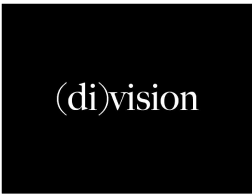

Division
(di)vision is a Copenhagen based fashion brand founded in 2018 by Simon Wick. they have made headlines all over the world from their performative fashion shows and unique approach to creating clothes.